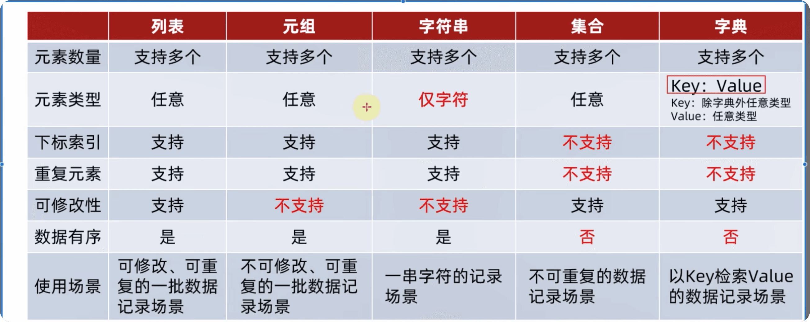

1.数据容器list
# 列表语法,列表内不限制类型
name=["lan","you","I","like","you"]
# 列表索引
print(name[0])# lan
print(name[-1])# you
print(name[-2])# like
print(name[1]) # you
# 列表嵌套
a=[[1,2,3],[5,6,7]]
print(a[1][1]) # 6
2.list的常用操作
# 类似mysql增删改查操作
#1. list 查找下标函数index()，查操作
name=["lan","you","I","like"]
a=name.index("I") # 查找I的下标为多少
print(a)
# 2
#2. 修改下标索引值 类似更新操作
name[0]="蓝幽" #更新下标为0的值
print(name)
#['蓝幽', 'you', 'I', 'like']
#3. 插入列表值，类似增操作,但不能插入到最后的位置
name.insert(2,"love")
print(name)
# ['蓝幽', 'you', 'love', 'I', 'like']
#4. 插入列表值，也是增操作，将数据插入到最后的位置
name.append("you")
print(name)
#['蓝幽', 'you', 'love', 'I', 'like', 'you']
#5. 插入一批新元素
a=[1,2,3]
name.extend(a)
print(name)
# ['蓝幽', 'you', 'love', 'I', 'like', 'you', 1, 2, 3]
#6. 删除，有两种方式
# 1. del 列表[下标] 只能删除一个元素
del name[8]
print(name)
# ['蓝幽', 'you', 'love', 'I', 'like', 'you', 1, 2]
# 2. 列表.pop(下标),这个方法与del的不同在于，这个是取出对应下标值，可以把取出的值传给立一个变量
b=name.pop(7)
print(name)
print(b)
# ['蓝幽', 'you', 'love', 'I', 'like', 'you', 1]
# 2
#7. 删除匹配项remove(),注意：remove删除的是从前往后匹配到的第一个值，只能删除一个，删除多个需要多次调用
name.remove("you")
print(name)
# ['蓝幽', 'love', 'I', 'like', 'you', 1]
#8. 清空列表
name.clear()
print(name)
# []
#9. 统计列表内某元素的数量
name1=['蓝幽', "you",'love', 'I', 'like', 'you', 1]
num=name1.count("you")
print(f"name1中的you有:{num}个")
# name1中的you有:2个
#10. 统计列表内全部元素的数量 也就是长度len()
c=len(name1)
print(c)
# 7
3.list操作练习案例
"""
有一个列表，内容是：121,25,21,23,22,20]，记录的是一批学生的年龄
请通过列表的功能（方法），对其进行
1. 定义这个列表，并用变量接收它
2. 追加一个数字31，到列表的尾部
3. 追加一个新列表(29,33，30]，到列表的尾部
4. 取出第一个元素（应是：21
5. 取出最后一个元素（应是：30）
6. 查找元素31，在列表中的下标位置
"""
age=[21,25,21,23,22,20]
age.append(31)
a=[29,33,30]
age.extend(a)
age.pop(0)
age.pop(-1)
age.index(31)
4.list遍历
# while循环遍历,输出列表内的元素
def name():
i=0
a=["lan","you","I","like","you"]
while i<len(a):
b=a[i]
print(b)
i+=1
name()
# for循环遍历
def num():
a=["lan","you","I","like","you"]
for i in a:
print(i)
num()
# 练习案例
"""
练习案例：取出列表内的偶数
定义一个列表，内容是：[1,2,3,4,5,6,7,8,9,10]
• 遍历列表，取出列表内的偶数，并存入一个新的列表对象中
使用while循环和for循环各操作一次
D:Idevlpythonlpython3.10.4lpython.exe D:/python-learn/05_数据容器/test.py
通过while循环，从列表：[1，2，3，4，5，6，7，8，9，10]中取出偶数，组成新列表：[2，4,6，8, 10]
通过for循环，从列表：[1，2，3，4,5，6，7，8，9，10]中取出偶数，组成新列表：[2,4,6,8,10]
提示：
• 通过f判断来确认偶数
通过列表的append方法，来增加元素
"""
# while循环
a=[1,2,3,4,5,6,7,8,9,10]
b=[]
i=0
while i<len(a):
c=a[i]
if c%2==0:
b.append(c)
i+=1
print(b)
c=[]
# for循环
for i in a:
if i%2==0:
c.append(i)
print(c)
5.tuple元组
# 元组的定义
a=(1,2,3)
b=()
c=tuple()
# 元组定义单个元素
d=("lan")
print(type(d),d)
# str lan为字符串类型
d=("you",)# 注意逗号
print(type(d),d)
# tuple you
#元祖的嵌套,索引同列表一样
a=((1,2,3),(4,5,6))
f=("lan","you","I","like","you")
# 元组的操作index
print(f.index("I")) #2
# count
num=f.count("you")
print(num) #2
# len
num1=len(f)
print(num1) #5
# while循环
i=0
name=("lan","you","I","like","you")
while i<len(name):
print(f"name里有元素:{name[i]}")
i+=1
# for循环
for j in name:
print(j)
# 元组不能被修改，但是元素里面的列表可以被修改
a1=(1,2,[3,4,5])
print(a1)
a1[2][1]="you"
a1[2][0]="lan"
a1[2][2]="like"
print(a1)
#(1, 2, [3, 4, 5])
#(1, 2, ['lan', 'you', 'like'])
"""
定义一个元组，内容是：（'周杰轮'，11, ['footbal!','music]），记录的是一个学生的信息（姓名、年
龄、爱好）
请通过元组的功能（方法），对其进行
1. 查询其年龄所在的下标位置
2. 查询学生的姓名
3. 删除学生爱好中的football
4. 增加爱好：coding到爱好list内
"""
student=("蓝幽",21,["football","music"])
print(student.index(21))
print(student[1])
student[2].remove("football")
print(student)
student[2].append("coding")
print(student)
6.字符串
# 字符串容器，为不可修改容器
a="lanyou I like you"
# 取下标
b=a[2]
c=a[-16]
print(b,c)# n,a
# index 方法 索引下标
value=a.index("like")
print(f"like再a中的起始下标是{value}") # 9
# replace 方法， 替换 注意这个方法不是修改字符串，而是得到一个新的字符串
value1=a.replace("lanyou","蓝幽" )
print(a,value1)
#lanyou I like you 蓝幽 I like you
# split 方法 分割
value2=a.split(",")
print(value2) #['lanyou I like you']
value3=a.split(" ")
print(value3) #['lanyou', 'I', 'like', 'you'] 类型为列表
#strip 方法 去除前后空格或内容,可传参，也可不传参
a="lanyou I like you"
b=a.strip()#默认去除前后空格
print(b)# lanyou I like you
c=a.strip("l")
print(c)# anyou I like you
# count 统计对应字符出现的次数
num=a.count("y")
print(num)# 2
# len 统计长度
b=len(a)
print(b)
# 17
# 练习案例
"""
1.统计宇符串内有多少个"it"字符
2.将字符串内的空格，全部替换为字符："|"
3.并按照"|"进行字符串分割，得到列表
"""
a="lanyou I like you"
print(a.count("l"))
b=a.replace(" ", "|")
print(b)
c=b.split("|")
print(c)
"""
2
lanyou|I|like|you
['lanyou', 'I', 'like', 'you']
"""
7.序列的切片
# 序列指 列表，元组，字符串，也是不可修改
# 列表的切片
a=[1,2,3,4,5,6]
b=a[1:5:1]# [起始下标：结束下标：步长]步长不写默认为1,注意，步长为负值也是可以的，这样会从后往前开始记入
print(b)#[2, 3, 4, 5]
# 元组的切片
a=(1,2,3,4,5,6)
b=a[0:3]
print(b)# (1, 2, 3)
# 字符串的切片
a="lanyou"
b=a[0:5:2]
print(b)#lno
#序列反转
b=a[::][::-1]
print(b)
#uoynal
"""
练习案例
有字符串：方过薪月，员序程马黑来，nohtyP学"
•请使用学过的任何方式，得到"黑马程序员"
可用方式参考：
•倒序字符串，切片取出或切片取出，然后倒序
split分隔"，"replace替换"来"为空，倒序字符串
"""
name="方过薪月,员序程马黑来,nohtyP学"
c=name[::-1][9:14]
print(c) # 先倒后取
d=name[5:10][::-1]
print(d)# 先取后倒
8.集合的定义和操作
#列表可修改、支持重复元素且有扇
#元组、宇符串不可修改、支持重复元素且有序
#而set集合就是不能重复且无序
#定义集合
a={"lan","you","I","like","you"}
print(a)#{'you', 'lan', 'I', 'like'}随机排序且去重
b=set() #定义空集，不能{},因为{}被字典占用了
print(b)# set()
# 集合添加
a={"lan","you","I","like","you"}
a.add("love")
print(a)
#{'I', 'lan', 'like', 'love', 'you'}
# 集合移除
a={"lan","you","I","like","you"}
a.remove("I")
print(a)
#{'like', 'you', 'lan'}
# 集合取出
a={"lan","you","I","like","you"}
b=a.pop()#因为集合内部是无序的，所以也可认为是随机取出
print(a,b)
#{'you', 'like', 'I'} lan
# 清空集合
a={"lan","you","I","like","you"}
a.clear()
print(a)
#set()
#集合的差集，但不会改变a集合和b集合
a={1,2,3}
b={1,4,5}
c=a.difference(b)#意思可以认为是：a集合里面有哪些是和b集合是不同的，可以传
print(c) # {2,3}
# 集合的差集并改变集合。消除差集
a={1,2,3}
b={1,4,5}
c=a.difference_update(b)# 不能被传
print(c)# none
print(a)# {2,3}
print(b)#{1,4,5}
# 集合合并
a={1,2,3}
b={1,4,5}
c=a.union(b)
print(c)# {1,2,3,4,5}
# 统计集合元素数量len()
a={1,2,3,4,5,6,7,6,5}
num=len(a)
print(num)# 7
# 集合的遍历，因为集合内部元素是没有下标的，所以不能用while循环，只能for循环
for x in a:
print(f"a中有元素：{x}")
"""
a中有元素：1
a中有元素：2
a中有元素：3
a中有元素：4
a中有元素：5
a中有元素：6
a中有元素：7
"""
"""
练习案例
有如下列表对象：
mylist=[黑马程序员'，'传智播客！，"黑马程序员'，"传智播客'，'itheima', "itcast', "itheima', 'itcast!
'best']
请：
• 定义一个空集合
通过for循环遍历列表
在for循环中将列表的元素添加至集合
最终得到元素去重后的集合对象，并打印输出
"""
mylist=['黑马程序员','传智播客！，"黑马程序员','传智播客','itheima', 'itcast', 'itheima', 'itcast!','best']
b=set()
for x in mylist:
b.add(x)
print(b)
#{'itcast!', '黑马程序员', '传智播客', 'itcast', 'itheima', '传智播客！，"黑马程序员', 'best'}
9.字典
# 字典定义
a={}
a=dict()
a={"key" :99}# key不可为字典，就是说这里的a不能用key
#字典内数据不能重复，后面重复的value会替代前面的value
a={"key":99,"key":88}
print(a)#{"key":88}
#基于key取出value
a={"ll":33,"kk":90,"lo":80}
print(a["ll"])# 33
#定义嵌套字典
a={"lan":{"语文":98,"数学":78,"英语":90},
"you":{"语文":97,"数学":74,"英语":39},
"ya":{"语文":95,"数学":70,"英语":60}
}
b=a["ya"]["语文"]
print(b)# 95
#字典的常用操作
# 1.获取对于的key值
a={"a":1,"b":2,"c":3,"d":4}
print(a["c"])#3
# 2.添加和更新字典
a["f"]=5#有值就是添加
a["d"]=3.3#重复key就是更新
# 3.删除
fun=a.pop("a")
# 4.清空字典
a.clear()
# 5.获取字典全部key
fun1=a.keys()
print(fun1)
#6.计算字典元素数量
len(a)
# 案例 给级别为2的人加一级并加工资1000
name={"wulihong":{"部门:":"科技部","工资":3000,"级别":1},
"zhoujielun":{"部门:":"市场部","工资":5000,"级别":2},
"zhangsan":{"部门:":"科技部","工资":7000,"级别":3}}
for x in name.keys():
#print(name.keys())
# print(x)
if name[x]["级别"]==2:
name[x]["级别"]+=1
name[x]["工资"]+=1000
print(name)
10.各容器对比及转换排序
a1=[1,2,3,4,5]
a2=(1,2,3,4,5)
a3="abcdefg"
a4={1,2,3,4,5}
a5={"key1":1,"key2":2,"key3":3,"key4":4,"key5":5}
# len(),man(),min(),list(),tuple(),str(),set(),dict()
#len()跳过
# max()
print(max(a1))#5
print(max(a2))#5
print(max(a3))#g
print(max(a4))#5
print(max(a5))#key5
#min同理取最小
#list()
print(list(a1))#[1, 2, 3, 4, 5]
print(list(a2))#[1, 2, 3, 4, 5]
print(list(a3))#['a', 'b', 'c', 'd', 'e', 'f', 'g']
print(list(a4))#[1, 2, 3, 4, 5]
print(list(a5))#['key1', 'key2', 'key3', 'key4', 'key5']
#tuple()
print(tuple(a1))#(1, 2, 3, 4, 5)
print(tuple(a2))#(1, 2, 3, 4, 5)
print(tuple(a3))#('a', 'b', 'c', 'd', 'e', 'f', 'g')
print(tuple(a4))#(1, 2, 3, 4, 5)
print(tuple(a5))#('key1', 'key2', 'key3', 'key4', 'key5')
#str()
print(str(a1))#"[1, 2, 3, 4, 5]"
print(str(a2))#"(1, 2, 3, 4, 5)"
print(str(a3))#"abcdefg"
print(str(a4))#"{1, 2, 3, 4, 5}"
print(str(a5))#"{'key1': 1, 'key2': 2, 'key3': 3, 'key4': 4, 'key5': 5}"
# set()
print(set(a1))#{1, 2, 3, 4, 5}
print(set(a2))#{1, 2, 3, 4, 5}
print(set(a3))#{'g', 'b', 'e', 'a', 'c', 'f', 'd'}
print(set(a4))#{1, 2, 3, 4, 5}
print(set(a5))#{'key5', 'key3', 'key4', 'key2', 'key1'}
#dict() 其他列表不能转字典，因为字典内存在键值对
#排序 从小到大
print(sorted(a1))
print(sorted(a2))
print(sorted(a3))
print(sorted(a4))
print(sorted(a5))
# 从大到小
print(sorted(a1,reverse=True))
print(sorted(a2,reverse=True))
print(sorted(a3,reverse=True))
print(sorted(a4,reverse=True))
print(sorted(a5,reverse=True))
11.字符串如何比较大小
# 字符串如何比较大小
# 从头大尾，一位一位比较，，其中一位大，后面无需比较
# 单个字符如何确定大小
# 通过ascll表比较 A=65 Z=90 a=97 z=122